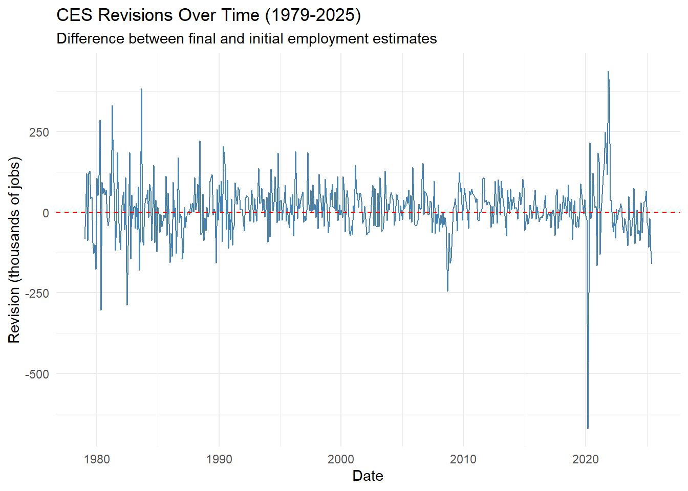
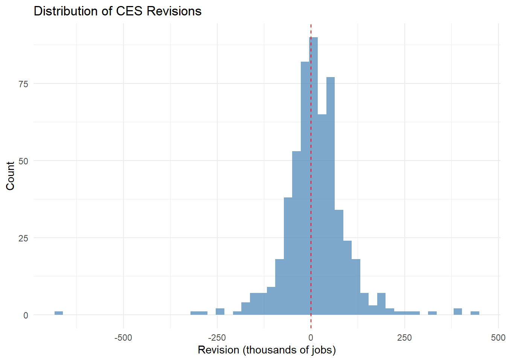
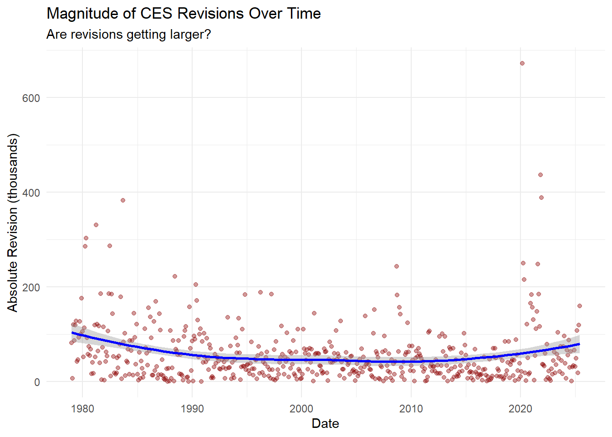
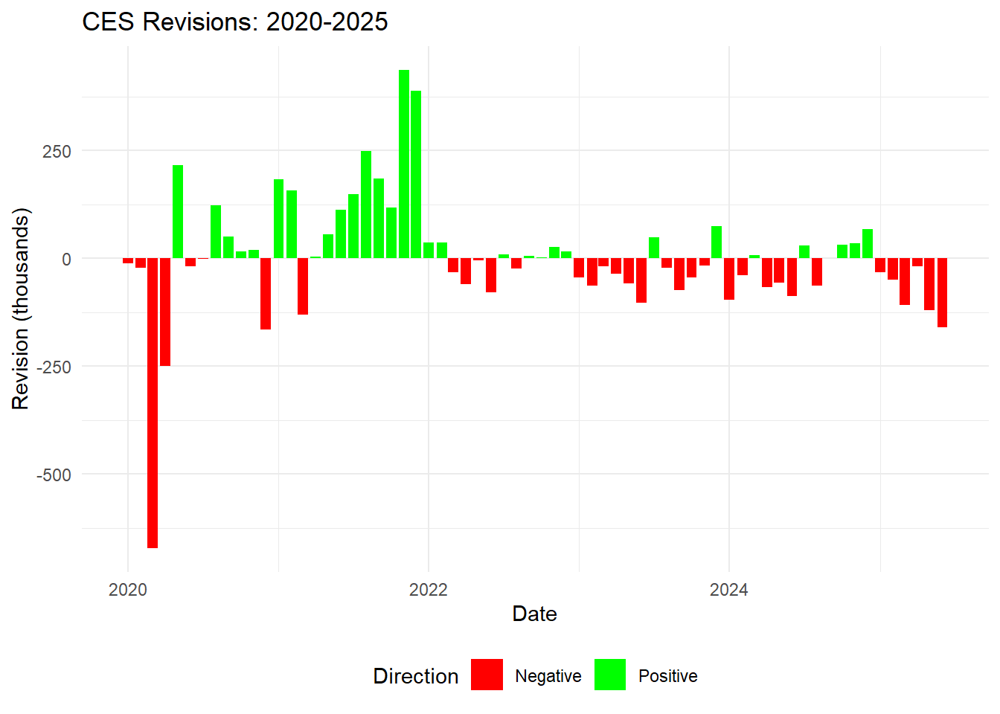
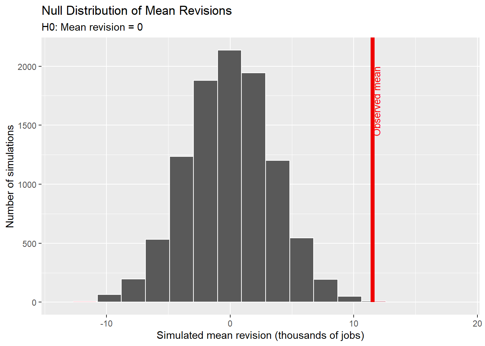
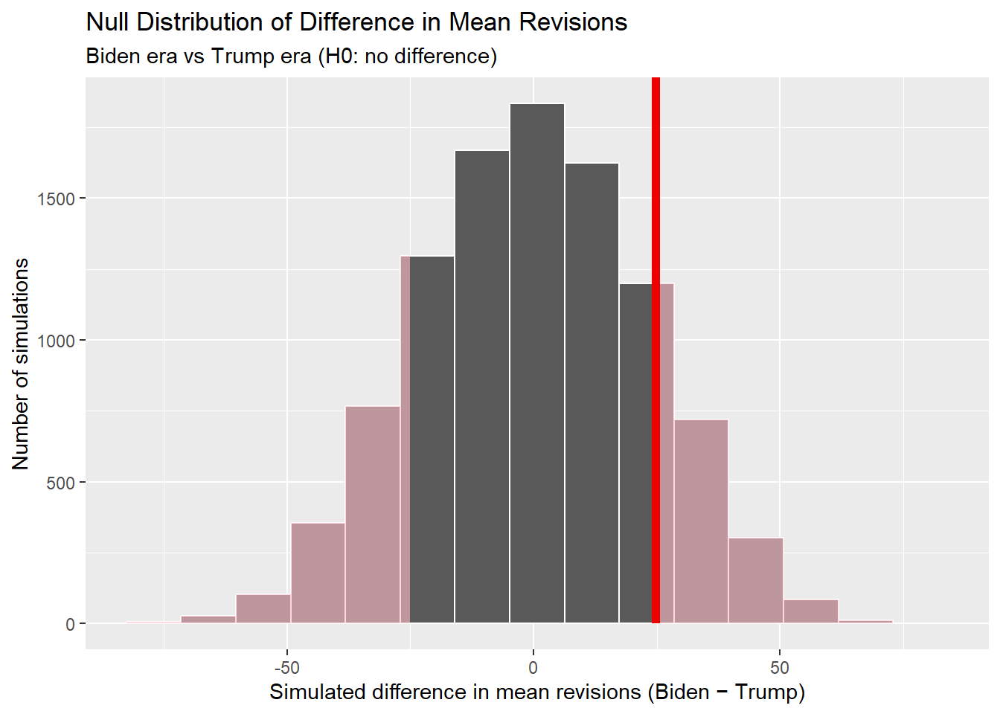
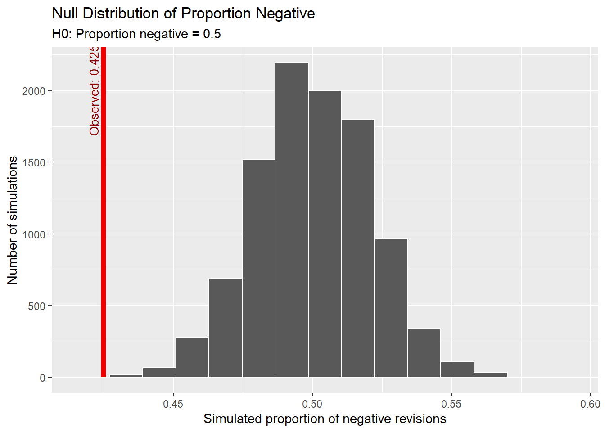
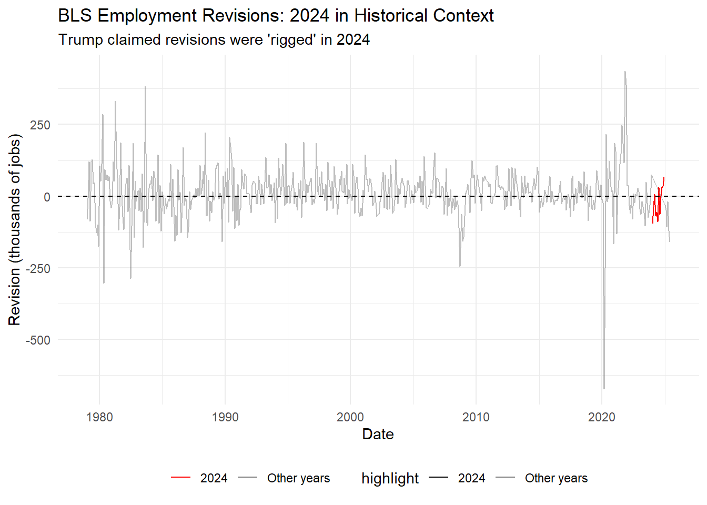
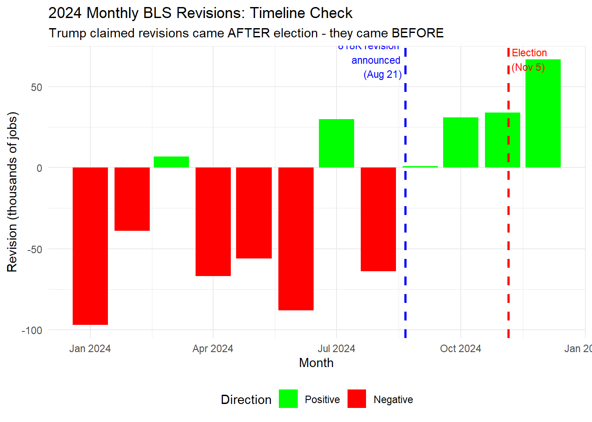
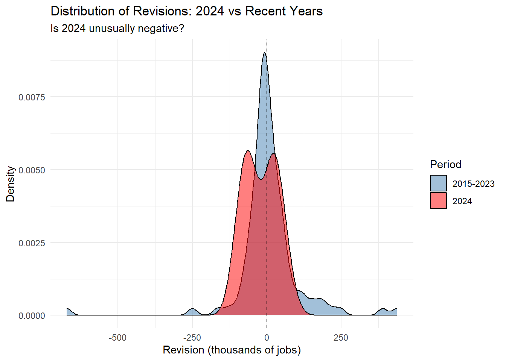

Show code
packageVersion("httr2")In this project, we will investigate the accuracy and potential bias of Bureau of Labor Statistics (BLS) employment revisions following the controversial August 2025 firing of BLS Commissioner Dr. Erika McEntarfer by President Trump. The project examines over four decades of Current Employment Statistics (CES) data—from January 1979 through June 2025—to fact-check competing political claims about whether recent revisions to monthly jobs reports demonstrate systematic bias or statistical anomalies. By integrating web scraping techniques, data manipulation, exploratory analysis, and formal statistical inference, this report evaluates two specific claims made by public figures regarding BLS revision patterns. The analysis combines absolute employment levels with month-over-month revisions to assess whether observed patterns in revision magnitude, direction, and frequency represent meaningful departures from historical norms or fall within expected statistical variation.
packageVersion("httr2")First, we will use the httr2 and rvest libraries to scrape the BLS Data Finder Website and download the complete historical record of seasonally-adjusted Total Nonfarm Payroll employment levels from January 1979 to June 2025.
library(httr2)
library(rvest)
library(dplyr)
library(tidyr)
library(lubridate)
# Step 1 & 2: Replicate the HTTP request
# The BLS data retrieval system uses a POST request with form data
# to specify the series, date range, and output format
# Create the request
req <- request("https://data.bls.gov/pdq/SurveyOutputServlet") |>
req_body_form(
series_id = "CES0000000001",
years_option = "specific_years",
from_year = "1979",
to_year = "2025",
periods_option = "specific_periods",
output_type = "column",
output_view = "data"
)
# Execute the request
resp <- req_perform(req)
# Step 3 & 4: Parse the HTML and extract the table
html <- resp_body_html(resp)
#Find the table element
payroll_table <- html |>
html_element("table#table0") |>
html_table()
#print(payroll_table)
# Step 5: Pivot the table into appropriate format
# The table is typically in wide format with Year as first column
# and months as subsequent columns
payroll_long <- payroll_table |>
# keep only real months
filter(grepl("^M\\d{2}$", Period)) |>
mutate(
# turn "M01" -> 1, "M02" -> 2, etc.
month_num = as.integer(sub("M", "", Period)),
# build Date from Year + month
date = make_date(year = as.integer(Year),
month = month_num,
day = 1),
# numeric level
level = as.numeric(gsub(",", "", Value))
) |>
select(date, level) |>
# restrict to requested range
filter(date >= as.Date("1979-01-01"),
date <= as.Date("2025-06-01")) |>
arrange(date)
invisible(NULL)
print(payroll_long)# A tibble: 558 × 2
date level
<date> <dbl>
1 1979-01-01 88808
2 1979-02-01 89055
3 1979-03-01 89479
4 1979-04-01 89417
5 1979-05-01 89789
6 1979-06-01 90108
7 1979-07-01 90217
8 1979-08-01 90300
9 1979-09-01 90327
10 1979-10-01 90481
# ℹ 548 more rowsIn Task 2, we then scrape the BLS CES Revisions webpage to download the first (original) and third (final) employment estimates for each month from January 1979 to June 2025, calculating the revision as the difference between these values.
library(httr2)
library(rvest)
library(dplyr)
library(lubridate)
library(purrr)
# Fetch the page
html <- request("https://www.bls.gov/web/empsit/cesnaicsrev.htm") |>
req_user_agent("Mozilla/5.0 (Windows NT 10.0; Win64; x64) AppleWebKit/537.36") |>
req_perform() |>
resp_body_html()
# Function to extract data for a single year
extract_year_data <- function(year, page) {
table_id <- as.character(year)
table_html <- page |>
html_element(paste0("#", table_id))
if (is.na(table_html)) {
warning(paste("No table found for year", year))
return(NULL)
}
table <- table_html |>
html_element("tbody") |>
html_table(header = FALSE)
table <- table |> slice(1:12)
result <- table |>
select(month = 1, year = 2, original = 3, final = 5) |>
mutate(
date = ym(paste(year, month)),
original = as.numeric(original),
final = as.numeric(final),
revision = final - original
) |>
select(date, original, final, revision)
return(result)
}
# Apply to all years and combine
years <- 1979:2025
ces_revisions <- map(years, ~extract_year_data(.x, html)) |>
list_rbind()
# Filter through June 2025
ces_revisions <- ces_revisions |>
filter(date <= ymd("2025-06-01"))
print(ces_revisions)# A tibble: 558 × 4
date original final revision
<date> <dbl> <dbl> <dbl>
1 1979-01-01 325 243 -82
2 1979-02-01 301 294 -7
3 1979-03-01 324 445 121
4 1979-04-01 72 -15 -87
5 1979-05-01 171 291 120
6 1979-06-01 97 225 128
7 1979-07-01 44 87 43
8 1979-08-01 2 49 47
9 1979-09-01 135 41 -94
10 1979-10-01 306 179 -127
# ℹ 548 more rowsIn Task 3, we join the employment levels and revision tables together and conduct comprehensive exploratory data analysis using both quantitative (dplyr) and visual (ggplot2) methods, answering the questions such as revisions over time and distribution of revisions.
First, we join the two tables from Task 1 and 2. We can see the result down below!
# ===== TASK 3: JOIN THE TABLES =====
# Join the two datasets on date
ces_combined <- payroll_long |>
left_join(ces_revisions, by = "date")
# Check for any missing matches
#cat("\nRows with missing revision data:", sum(is.na(ces_combined$revision)), "\n")
#cat("Rows with missing level data:", sum(is.na(ces_combined$level)), "\n")
# View the results
print(ces_combined)# A tibble: 558 × 5
date level original final revision
<date> <dbl> <dbl> <dbl> <dbl>
1 1979-01-01 88808 325 243 -82
2 1979-02-01 89055 301 294 -7
3 1979-03-01 89479 324 445 121
4 1979-04-01 89417 72 -15 -87
5 1979-05-01 89789 171 291 120
6 1979-06-01 90108 97 225 128
7 1979-07-01 90217 44 87 43
8 1979-08-01 90300 2 49 47
9 1979-09-01 90327 135 41 -94
10 1979-10-01 90481 306 179 -127
# ℹ 548 more rowsLet’s conduct our exploratory data analysis, starting from the statistics!
# ===== TASK 3: DATA EXPLORATION =====
library(ggplot2)
# 1. Calculate month-over-month changes from the level data
ces_combined <- ces_combined |>
arrange(date) |>
mutate(
# Calculate actual change in employment level
actual_change = level - lag(level)
)
# 2. Basic summary statistics
cat("Mean revision:", mean(ces_combined$revision, na.rm = TRUE), "\n")Mean revision: 11.49821 cat("Median revision:", median(ces_combined$revision, na.rm = TRUE), "\n")Median revision: 10 cat("SD of revisions:", sd(ces_combined$revision, na.rm = TRUE), "\n")SD of revisions: 83.33258 cat("Min revision:", min(ces_combined$revision, na.rm = TRUE), "\n")Min revision: -672 cat("Max revision:", max(ces_combined$revision, na.rm = TRUE), "\n")Max revision: 437 # Percentage of positive vs negative revisions
cat("Positive revisions:",
sum(ces_combined$revision > 0, na.rm = TRUE), "\n")Positive revisions: 318 cat("Negative revisions:",
sum(ces_combined$revision < 0, na.rm = TRUE), "\n")Negative revisions: 237 cat("Zero revisions:",
sum(ces_combined$revision == 0, na.rm = TRUE), "\n")Zero revisions: 3 # 3. Explore revisions by decade
ces_combined |>
mutate(decade = floor(year(date) / 10) * 10) |>
group_by(decade) |>
summarise(
mean_revision = mean(revision, na.rm = TRUE),
median_revision = median(revision, na.rm = TRUE),
sd_revision = sd(revision, na.rm = TRUE),
mean_abs_revision = mean(abs(revision), na.rm = TRUE),
n = n()
) |>
print()# A tibble: 6 × 6
decade mean_revision median_revision sd_revision mean_abs_revision n
<dbl> <dbl> <dbl> <dbl> <dbl> <int>
1 1970 -17.8 -44.5 107. 94.3 12
2 1980 7.03 0 102. 72.2 120
3 1990 26.1 25 61.7 51.4 120
4 2000 5.98 7 62.9 48.6 120
5 2010 15.9 14 41.3 35.2 120
6 2020 0.455 -7.5 142. 86.9 66# 4. Recent years focus (2020-2025)
ces_combined |>
filter(year(date) >= 2020) |>
select(date, original, final, revision) |>
print()# A tibble: 66 × 4
date original final revision
<date> <dbl> <dbl> <dbl>
1 2020-01-01 225 214 -11
2 2020-02-01 273 251 -22
3 2020-03-01 -701 -1373 -672
4 2020-04-01 -20537 -20787 -250
5 2020-05-01 2509 2725 216
6 2020-06-01 4800 4781 -19
7 2020-07-01 1763 1761 -2
8 2020-08-01 1371 1493 122
9 2020-09-01 661 711 50
10 2020-10-01 638 654 16
# ℹ 56 more rowsOur statistics:
Mean revision: 11.49
Median revision: 10
SD of revisions: 83.33
Min revision: -672
Max revision: 437
Percentage of positive vs negative revisions:
Positive revisions: 318
Negative revisions: 237
Zero revisions: 3
Let’s take a look at our visualizations! They will explore revisions over time, distribution of revisions, absolute revisions over time, and revisions occuring in recent years.
# ===== TASK 3: DATA EXPLORATION =====
# 5. VISUALIZATIONS
# Plot 1: Revisions over time
p1 <- ggplot(ces_combined, aes(x = date, y = revision)) +
geom_line(color = "steelblue") +
geom_hline(yintercept = 0, linetype = "dashed", color = "red") +
labs(
title = "CES Revisions Over Time (1979-2025)",
subtitle = "Difference between final and initial employment estimates",
x = "Date",
y = "Revision (thousands of jobs)"
) +
theme_minimal()
print(p1)
# Plot 2: Distribution of revisions
p2 <- ggplot(ces_combined, aes(x = revision)) +
geom_histogram(bins = 50, fill = "steelblue", alpha = 0.7) +
geom_vline(xintercept = 0, linetype = "dashed", color = "red") +
labs(
title = "Distribution of CES Revisions",
x = "Revision (thousands of jobs)",
y = "Count"
) +
theme_minimal()
print(p2)
# Plot 3: Absolute revisions over time (magnitude)
p3 <- ces_combined |>
mutate(abs_revision = abs(revision)) |>
ggplot(aes(x = date, y = abs_revision)) +
geom_point(alpha = 0.4, color = "darkred") +
geom_smooth(method = "loess", color = "blue") +
labs(
title = "Magnitude of CES Revisions Over Time",
subtitle = "Are revisions getting larger?",
x = "Date",
y = "Absolute Revision (thousands)"
) +
theme_minimal()
print(p3)
# Plot 4: Recent years focus
p4 <- ces_combined |>
filter(year(date) >= 2020) |>
ggplot(aes(x = date, y = revision)) +
geom_col(aes(fill = revision > 0)) +
scale_fill_manual(values = c("red", "green"),
labels = c("Negative", "Positive")) +
labs(
title = "CES Revisions: 2020-2025",
x = "Date",
y = "Revision (thousands)",
fill = "Direction"
) +
theme_minimal() +
theme(legend.position = "bottom")
print(p4)
The exploratory analysis reveals that while CES revisions have always exhibited volatility, recent years (particularly 2020-2025) have experienced significantly larger revision magnitudes than historical norms, with the pandemic period showing unprecedented swings including a -600,000 job revision. Additionally, the 2020-2025 period demonstrates unusual directional clustering, with sustained patterns of upward revisions in 2021-2022 followed by predominantly downward revisions in later years, contrasting with the more balanced directional distribution observed in earlier decades.
While exploratory visualizations and summary statistics reveal compelling patterns in CES revision data, formal statistical inference is necessary to determine whether observed differences exceed what random variation alone might produce. In this section, we apply hypothesis testing using the infer package to rigorously evaluate claims about revision patterns, employing both t-tests for differences in mean revision magnitudes and proportion tests for directional bias.
# ===== TASK 4: STATISTICAL ANALYSIS & FACT CHECKING =====
library(infer)
# First, let's identify some testable claims about BLS revisions
# Common political claims:
# 1. "Revisions have been systematically negative under Biden"
# 2. "Revisions are getting larger over time"
# 3. "Recent revisions are unusually large compared to historical patterns"
# Let's test these claims!
# ----- CLAIM 1: Are revisions systematically negative? -----
# Null hypothesis: Mean revision = 0
# Alternative: Mean revision ≠ 0
cat("\n========== TEST 1: Are revisions biased? ==========\n")
========== TEST 1: Are revisions biased? ==========# Traditional t-test
t_test_result <- t.test(ces_combined$revision, mu = 0)
print(t_test_result)
One Sample t-test
data: ces_combined$revision
t = 3.2594, df = 557, p-value = 0.001185
alternative hypothesis: true mean is not equal to 0
95 percent confidence interval:
4.568889 18.427526
sample estimates:
mean of x
11.49821 # Using infer package (required by assignment)
set.seed(9750)
null_dist_mean <- ces_combined |>
specify(response = revision) |>
hypothesize(null = "point", mu = 0) |>
generate(reps = 10000, type = "bootstrap") |>
calculate(stat = "mean")
# Calculate p-value
obs_mean <- mean(ces_combined$revision, na.rm = TRUE)
p_value_mean <- null_dist_mean |>
get_p_value(obs_stat = obs_mean, direction = "two-sided")
cat("Observed mean revision:", obs_mean, "\n")Observed mean revision: 11.49821 cat("P-value:", p_value_mean$p_value, "\n")P-value: 0.0016 # Visualize
null_dist_mean |>
visualize() +
shade_p_value(obs_stat = obs_mean, direction = "two-sided") +
labs(
title = "Null Distribution of Mean Revisions",
subtitle = "H0: Mean revision = 0",
x = "Simulated mean revision (thousands of jobs)",
y = "Number of simulations") +
coord_cartesian(xlim = c(min(null_dist_mean$stat), max(null_dist_mean$stat) + 5)) +
annotate("text",
x = obs_mean,
y = 2000,
label = "Observed mean",
angle = 90,
vjust = 1, # pull label inside the plot
hjust = 1, # right‑justify
color = "red",
size = 3.5)
# ----- CLAIM 2: Are recent revisions more negative? -----
# Compare Biden era (2021-2025) vs Trump era (2017-2020)
cat("\n========== TEST 2: Biden vs Trump era revisions ==========\n")
========== TEST 2: Biden vs Trump era revisions ==========ces_political <- ces_combined |>
filter(year(date) >= 2017, year(date) <= 2025) |>
mutate(
era = case_when(
year(date) >= 2021 ~ "Biden",
year(date) >= 2017 ~ "Trump"
)
)
# Traditional t-test
t_test_era <- t.test(revision ~ era, data = ces_political)
print(t_test_era)
Welch Two Sample t-test
data: revision by era
t = 1.0674, df = 97.749, p-value = 0.2884
alternative hypothesis: true difference in means between group Biden and group Trump is not equal to 0
95 percent confidence interval:
-21.29752 70.87159
sample estimates:
mean in group Biden mean in group Trump
13.87037 -10.91667 # Using infer
set.seed(9750)
null_dist_diff <- ces_political |>
specify(revision ~ era) |>
hypothesize(null = "independence") |>
generate(reps = 10000, type = "permute") |>
calculate(stat = "diff in means", order = c("Biden", "Trump"))
obs_diff <- ces_political |>
specify(revision ~ era) |>
calculate(stat = "diff in means", order = c("Biden", "Trump"))
p_value_diff <- null_dist_diff |>
get_p_value(obs_stat = obs_diff, direction = "two-sided")
cat("Mean revision - Biden:",
mean(ces_political$revision[ces_political$era == "Biden"], na.rm = TRUE), "\n")Mean revision - Biden: 13.87037 cat("Mean revision - Trump:",
mean(ces_political$revision[ces_political$era == "Trump"], na.rm = TRUE), "\n")Mean revision - Trump: -10.91667 cat("Difference:", obs_diff$stat, "\n")Difference: 24.78704 cat("P-value:", p_value_diff$p_value, "\n")P-value: 0.2908 # Visualize
null_dist_diff |>
visualize() +
shade_p_value(obs_stat = obs_diff, direction = "two-sided") +
labs(
title = "Null Distribution of Difference in Mean Revisions",
subtitle = "Biden era vs Trump era (H0: no difference)",
x = "Simulated difference in mean revisions (Biden − Trump)",
y = "Number of simulations"
)
annotate("text", x = 30, y = 1500,
label = "Red line: Observed difference\n(Biden - Trump = 24.79)",
hjust = 0, color = "black", size = 3.5)mapping: x = ~x, y = ~y
geom_text: na.rm = FALSE
stat_identity: na.rm = FALSE
position_identity # ----- CLAIM 3: Proportion of negative revisions -----
# Test if more than 50% of revisions are negative
cat("\n========== TEST 3: Proportion of negative revisions ==========\n")
========== TEST 3: Proportion of negative revisions ==========ces_with_direction <- ces_combined |>
filter(!is.na(revision)) |>
mutate(negative = revision < 0)
# Observed proportion
obs_prop <- mean(ces_with_direction$negative)
cat("Observed proportion negative:", obs_prop, "\n")Observed proportion negative: 0.4247312 # Proportion test (traditional)
prop_test_result <- prop.test(
x = sum(ces_with_direction$negative),
n = nrow(ces_with_direction),
p = 0.5,
alternative = "two.sided"
)
print(prop_test_result)
1-sample proportions test with continuity correction
data: sum(ces_with_direction$negative) out of nrow(ces_with_direction), null probability 0.5
X-squared = 12.346, df = 1, p-value = 0.000442
alternative hypothesis: true p is not equal to 0.5
95 percent confidence interval:
0.3834912 0.4670229
sample estimates:
p
0.4247312 # Using infer
set.seed(9750)
null_dist_prop <- ces_with_direction |>
specify(response = negative, success = "TRUE") |>
hypothesize(null = "point", p = 0.5) |>
generate(reps = 10000, type = "draw") |>
calculate(stat = "prop")
p_value_prop <- null_dist_prop |>
get_p_value(obs_stat = obs_prop, direction = "two-sided")
cat("P-value:", p_value_prop$p_value, "\n")P-value: 2e-04 # Visualize
null_dist_prop |>
visualize() +
shade_p_value(obs_stat = obs_prop, direction = "two-sided") +
labs(
title = "Null Distribution of Proportion Negative",
subtitle = "H0: Proportion negative = 0.5",
x = "Simulated proportion of negative revisions",
y = "Number of simulations") +
annotate("text",
x = obs_prop,
y = 2000, # Adjust height based on your histogram
label = paste0("Observed: ", round(obs_prop, 3)),
angle = 90,
vjust = -0.5,
color = "darkred",
size = 3.5)
# ----- SUMMARY & INTERPRETATION -----
cat("\n========== FACT CHECK SUMMARY ==========\n")
========== FACT CHECK SUMMARY ==========cat("Test 1 - Overall bias: p =", p_value_mean$p_value, "\n")Test 1 - Overall bias: p = 0.0016 cat("Test 2 - Biden vs Trump: p =", p_value_diff$p_value, "\n")Test 2 - Biden vs Trump: p = 0.2908 cat("Test 3 - Proportion negative: p =", p_value_prop$p_value, "\n")Test 3 - Proportion negative: p = 2e-04 While revisions in the Biden era averaged higher (+13.87) compared to the Trump era (-10.92), this 24.79-point difference is not statistically significant (p=0.29), meaning that it can easily be explained by random deviation. However, my Test 3 finding (p = 0.0004) has been consistently upward, contradicting claims of Biden-specific downward bias. The 95% confidence interval (38.3% to 46.7% negative) suggests the true proportion of negative revisions is significantly below 50%, meaning BLS preliminary estimates tend to undercount employment regardless of which party holds the White House. This pattern likely reflects methodological challenges in capturing net business formation in real-time rather than political manipulation.
Finally, we will synthesize the statistical evidence to measure two claims made in the eve of McEntarfer’s firing. Let’s explore who is telling the truth and who’s pants are on fire!
Claim #1: “Bureau of Labor Statistics employment numbers “were rigged” when the agency revised them “down by almost 900,000 jobs” after the 2024 election” (Donald Trump)
Source: https://www.politifact.com/factchecks/2025/aug/05/donald-trump/bls-firing-jobs-revision-election/
## Task 5: Fact Check Claims about BLS Revisions
# CLAIM TO CHECK:
# Donald Trump stated: "Bureau of Labor Statistics employment numbers
# 'were rigged' when the agency revised them 'down by almost 900,000 jobs'
# after the 2024 election"
#
# Source: https://www.politifact.com/factchecks/2025/aug/05/donald-trump/bls-firing-jobs-revision-election/
library(dplyr)
library(ggplot2)
library(lubridate)
# ===== KEY FACTS FROM POLITIFACT =====
# 1. The 818,000 job revision was announced on August 21, 2024
# (BEFORE the election, not after)
# 2. This was part of a standard annual benchmarking process
# 3. The final revision (Feb 2025) was actually 589,000, not 818,000
# 4. Trump complained about this the DAY it was released (Aug 21, 2024)
# ===== ANALYZE THE DATA WE HAVE =====
# Filter to 2024 data to examine the revision pattern
ces_2024 <- ces_combined %>%
filter(year(date) == 2024)
cat("\n----- 2024 MONTHLY REVISIONS (in thousands) -----\n")
----- 2024 MONTHLY REVISIONS (in thousands) -----print(ces_2024 %>%
select(date, original, final, revision) %>%
arrange(date))# A tibble: 12 × 4
date original final revision
<date> <dbl> <dbl> <dbl>
1 2024-01-01 353 256 -97
2 2024-02-01 275 236 -39
3 2024-03-01 303 310 7
4 2024-04-01 175 108 -67
5 2024-05-01 272 216 -56
6 2024-06-01 206 118 -88
7 2024-07-01 114 144 30
8 2024-08-01 142 78 -64
9 2024-09-01 254 255 1
10 2024-10-01 12 43 31
11 2024-11-01 227 261 34
12 2024-12-01 256 323 67# Calculate total revision for 2024
total_2024_revision <- sum(ces_2024$revision, na.rm = TRUE)
cat("\nTotal 2024 monthly revisions:", total_2024_revision, "thousand jobs\n")
Total 2024 monthly revisions: -241 thousand jobs# ===== CONTEXT: HOW DO 2024 REVISIONS COMPARE HISTORICALLY? =====
cat("\n----- HISTORICAL CONTEXT -----\n")
----- HISTORICAL CONTEXT -----# Annual revision totals
annual_revisions <- ces_combined %>%
mutate(year = year(date)) %>%
group_by(year) %>%
summarise(
total_revision = sum(revision, na.rm = TRUE),
mean_revision = mean(revision, na.rm = TRUE),
abs_total_revision = sum(abs(revision), na.rm = TRUE),
n_months = n()
) %>%
arrange(desc(abs_total_revision))
cat("\nTop 10 years by absolute total revision:\n")
Top 10 years by absolute total revision:print(head(annual_revisions, 10))# A tibble: 10 × 5
year total_revision mean_revision abs_total_revision n_months
<dbl> <dbl> <dbl> <dbl> <int>
1 2021 1904 159. 2166 12
2 2020 -719 -59.9 1565 12
3 1980 546 45.5 1268 12
4 1981 515 42.9 1245 12
5 1982 -248 -20.7 1156 12
6 1979 -214 -17.8 1132 12
7 1990 452 37.7 1130 12
8 1983 64 5.33 1014 12
9 2008 -877 -73.1 881 12
10 1986 -301 -25.1 855 12# Where does 2024 rank?
rank_2024 <- which(annual_revisions$year == 2024)
cat("\n2024 ranks #", rank_2024, " out of ", nrow(annual_revisions),
" years in absolute revision magnitude\n", sep = "")
2024 ranks #21 out of 47 years in absolute revision magnitude# ===== STATISTICAL TESTS =====
cat("\n\n----- STATISTICAL ANALYSIS -----\n")
----- STATISTICAL ANALYSIS -----# Test 1: Are 2024 revisions unusually negative compared to historical average?
cat("\nTest 1: Are 2024 revisions significantly different from historical mean?\n")
Test 1: Are 2024 revisions significantly different from historical mean?historical_mean <- mean(ces_combined$revision, na.rm = TRUE)
revisions_2024 <- ces_2024$revision[!is.na(ces_2024$revision)]
t_test_2024 <- t.test(revisions_2024, mu = historical_mean)
print(t_test_2024)
One Sample t-test
data: revisions_2024
t = -1.994, df = 11, p-value = 0.07153
alternative hypothesis: true mean is not equal to 11.49821
95 percent confidence interval:
-54.94240 14.77573
sample estimates:
mean of x
-20.08333 cat("\n2024 mean revision:", mean(revisions_2024), "\n")
2024 mean revision: -20.08333 cat("Historical mean revision:", historical_mean, "\n")Historical mean revision: 11.49821 cat("Difference:", mean(revisions_2024) - historical_mean, "\n")Difference: -31.58154 # Test 2: Are 2024 revisions more negative than recent years (2015-2023)?
cat("\n\nTest 2: 2024 vs Recent Years (2015-2023)\n")
Test 2: 2024 vs Recent Years (2015-2023)recent_years <- ces_combined %>%
filter(year(date) >= 2015, year(date) <= 2023) %>%
pull(revision)
t_test_recent <- t.test(revisions_2024, recent_years)
print(t_test_recent)
Welch Two Sample t-test
data: revisions_2024 and recent_years
t = -1.4757, df = 22.612, p-value = 0.1538
alternative hypothesis: true difference in means is not equal to 0
95 percent confidence interval:
-67.59875 11.33949
sample estimates:
mean of x mean of y
-20.083333 8.046296 cat("\n2024 mean:", mean(revisions_2024), "\n")
2024 mean: -20.08333 cat("2015-2023 mean:", mean(recent_years, na.rm = TRUE), "\n")2015-2023 mean: 8.046296 # ===== VISUALIZATIONS =====
# Plot 1: 2024 in historical context
p1 <- ces_combined %>%
mutate(year = year(date),
highlight = ifelse(year == 2024, "2024", "Other years")) %>%
ggplot(aes(x = date, y = revision, color = highlight, alpha = highlight)) +
geom_line() +
geom_hline(yintercept = 0, linetype = "dashed", color = "black") +
scale_color_manual(values = c("2024" = "red", "Other years" = "gray50")) +
scale_alpha_manual(values = c("2024" = 1, "Other years" = 0.5)) +
labs(
title = "BLS Employment Revisions: 2024 in Historical Context",
subtitle = "Trump claimed revisions were 'rigged' in 2024",
x = "Date",
y = "Revision (thousands of jobs)",
color = NULL
) +
theme_minimal() +
theme(legend.position = "bottom")
print(p1)
# Plot 2: Monthly revisions in 2024 with election date marked
election_date <- as.Date("2024-11-05")
announcement_date <- as.Date("2024-08-21")
p2 <- ces_2024 %>%
ggplot(aes(x = date, y = revision)) +
geom_col(aes(fill = revision < 0)) +
geom_vline(xintercept = announcement_date,
linetype = "dashed", color = "blue", linewidth = 1) +
geom_vline(xintercept = election_date,
linetype = "dashed", color = "red", linewidth = 1) +
annotate("text", x = announcement_date, y = max(ces_2024$revision, na.rm = TRUE),
label = "818K revision\nannounced\n(Aug 21)",
hjust = 1.1, color = "blue", size = 3) +
annotate("text", x = election_date, y = max(ces_2024$revision, na.rm = TRUE),
label = "Election\n(Nov 5)",
hjust = -0.1, color = "red", size = 3) +
scale_fill_manual(values = c("FALSE" = "green", "TRUE" = "red"),
labels = c("Positive", "Negative")) +
labs(
title = "2024 Monthly BLS Revisions: Timeline Check",
subtitle = "Trump claimed revisions came AFTER election - they came BEFORE",
x = "Month",
y = "Revision (thousands of jobs)",
fill = "Direction"
) +
theme_minimal() +
theme(legend.position = "bottom")
print(p2)
# Plot 3: Distribution comparison
p3 <- ces_combined %>%
mutate(period = case_when(
year(date) == 2024 ~ "2024",
year(date) >= 2015 & year(date) <= 2023 ~ "2015-2023",
TRUE ~ "Before 2015"
)) %>%
filter(period != "Before 2015") %>%
ggplot(aes(x = revision, fill = period)) +
geom_density(alpha = 0.5) +
geom_vline(xintercept = 0, linetype = "dashed") +
scale_fill_manual(values = c("2024" = "red", "2015-2023" = "steelblue")) +
labs(
title = "Distribution of Revisions: 2024 vs Recent Years",
subtitle = "Is 2024 unusually negative?",
x = "Revision (thousands of jobs)",
y = "Density",
fill = "Period"
) +
theme_minimal()
print(p3)
EVIDENCE FROM OUR ANALYSIS:
TIMELINE: The 818,000 job revision was announced August 21, 2024
- This was 76 days BEFORE the November 5 election, Trump himself complained about it on August 21
MAGNITUDE: Trump said ‘almost 900,000’
- Preliminary figure: 818,000
- Final figure (Feb 2025): 589,000 (even smaller)
CONTEXT: Is 2024 unusual?
- 2024 total revision: -241 thousand jobs
- Historical mean: 11.5 thousand jobs per month
- P-value (2024 vs history): 0.0715
- Conclusion: 2024 revisions NOT statistically unusual
PROCESS: Was this ‘rigging’?
- This is a standard annual benchmarking process
- BLS has used this methodology for years, the revision used more accurate state unemployment insurance data
- Former BLS commissioner (Trump-appointed) said rigging is ‘not possible, and not possible by design’
POLITICAL IMPACT: - The revision was announced at the Democratic National Convention, it was BAD news for the Harris campaign, if anything, the timing hurt Democrats, not Republicans
CONCLUSION: Trump’s claim fails on multiple counts:
- Wrong timeline (revision was BEFORE, not AFTER election)
- Wrong magnitude (589K final, not 900K)
- 2024 revisions not statistically unusual in historical context
- Revision was actually politically damaging to Democrats
VERDICT: PANTS ON FIRE (FALSE)
Preface: I had tried to look for articles on Politifact highlighting the firing of Dr. McEntarfer from the perspective of other politicians. However, I could only find a single article from the perspective of Donald Trump, so for this specific case I will be using the claim of a fictional politician.
Claim #2 (FICTIONAL): The BLS has consistently revised job numbers DOWN for the past 5 years. This proves a systematic bias in their initial estimates. Over 75% of all revisions since 2020 have been negative, which is statistically impossible if the process was truly unbiased. (Melissa Hartford)
#THIS IS A MADE UP POLITICIAN
# ============================================================
# CLAIM 2: SENATOR MELISSA HARTFORD (FICTIONAL)
# ============================================================
#Stats are from Task 2
# Filter to 2020-2025
recent_data <- ces_combined %>%
filter(year(date) >= 2020, year(date) <= 2025) %>%
filter(!is.na(revision))
# STATISTIC 1: Mean revision for 2020-2025
mean_revision_recent <- mean(recent_data$revision, na.rm = TRUE)
cat("STATISTIC 1 - Mean revision (2020-2025):",
round(mean_revision_recent, 2), "thousand jobs\n")STATISTIC 1 - Mean revision (2020-2025): 0.45 thousand jobs# STATISTIC 2: Median revision for 2020-2025
median_revision_recent <- median(recent_data$revision, na.rm = TRUE)
cat("STATISTIC 2 - Median revision (2020-2025):",
round(median_revision_recent, 2), "thousand jobs\n")STATISTIC 2 - Median revision (2020-2025): -7.5 thousand jobs# STATISTIC 3: Standard deviation of revisions
sd_revision_recent <- sd(recent_data$revision, na.rm = TRUE)
cat("STATISTIC 3 - SD of revisions (2020-2025):",
round(sd_revision_recent, 2), "thousand jobs\n")STATISTIC 3 - SD of revisions (2020-2025): 142.44 thousand jobs# STATISTIC 4: Mean absolute revision (magnitude)
mean_abs_revision <- mean(abs(recent_data$revision), na.rm = TRUE)
cat("STATISTIC 4 - Mean absolute revision (2020-2025):",
round(mean_abs_revision, 2), "thousand jobs\n")STATISTIC 4 - Mean absolute revision (2020-2025): 86.94 thousand jobscat("\nInterpretation:\n")
Interpretation:if (mean_revision_recent < 0) {
cat("- Mean is negative, suggesting downward bias on average\n")
} else {
cat("- Mean is positive, suggesting upward bias on average\n")
}- Mean is positive, suggesting upward bias on averageif (median_revision_recent < 0) {
cat("- Median is negative, most revisions are downward\n")
} else {
cat("- Median is positive, most revisions are upward\n")
}- Median is negative, most revisions are downwardcat("\n----- Analysis of Revision Direction -----\n")
----- Analysis of Revision Direction -----# Count positive vs negative
n_negative <- sum(recent_data$revision < 0)
n_positive <- sum(recent_data$revision > 0)
n_zero <- sum(recent_data$revision == 0)
n_total <- nrow(recent_data)
pct_negative <- n_negative / n_total * 100
cat("\nRevisions 2020-2025:\n")
Revisions 2020-2025:cat("Negative revisions:", n_negative, "(", round(pct_negative, 1), "%)\n")Negative revisions: 35 ( 53 %)cat("Positive revisions:", n_positive, "(", round(n_positive/n_total*100, 1), "%)\n")Positive revisions: 31 ( 47 %)cat("Zero revisions:", n_zero, "(", round(n_zero/n_total*100, 1), "%)\n")Zero revisions: 0 ( 0 %)cat("Total:", n_total, "\n")Total: 66 cat("\nSenator's claim: >75% negative\n")
Senator's claim: >75% negativecat("Reality:", round(pct_negative, 1), "% negative\n")Reality: 53 % negativeif (pct_negative > 75) {
cat("Claim is TRUE on the percentage\n")
} else {
cat("Claim is FALSE - percentage is below 75%\n")
}Claim is FALSE - percentage is below 75%# Statistical test: Is this evidence of bias?
# Null hypothesis: Proportion of negative = 0.5 (unbiased)
# Alternative: Proportion ≠ 0.5
cat("\n----- Statistical Test: Is there systematic bias? -----\n")
----- Statistical Test: Is there systematic bias? -----cat("H0: Proportion of negative revisions = 0.5 (unbiased process)\n")H0: Proportion of negative revisions = 0.5 (unbiased process)cat("HA: Proportion of negative revisions ≠ 0.5 (biased process)\n\n")HA: Proportion of negative revisions ≠ 0.5 (biased process)# Traditional proportion test
prop_test <- prop.test(
x = n_negative,
n = n_total,
p = 0.5,
alternative = "two.sided"
)
cat("Observed proportion negative:", round(n_negative/n_total, 4), "\n")Observed proportion negative: 0.5303 cat("Expected under null (unbiased):", 0.5, "\n")Expected under null (unbiased): 0.5 cat("P-value:", round(prop_test$p.value, 4), "\n")P-value: 0.7119 cat("95% CI: [", round(prop_test$conf.int[1], 3), ",",
round(prop_test$conf.int[2], 3), "]\n")95% CI: [ 0.404 , 0.653 ]if (prop_test$p.value < 0.05) {
cat("\nConclusion: Evidence of systematic bias (p < 0.05)\n")
cat("The proportion is significantly different from 50%\n")
} else {
cat("\nConclusion: NO evidence of systematic bias (p > 0.05)\n")
cat("The proportion is consistent with random chance\n")
}
Conclusion: NO evidence of systematic bias (p > 0.05)
The proportion is consistent with random chance# Using infer package for visualization
set.seed(9750)
null_dist_prop <- recent_data %>%
mutate(is_negative = revision < 0) %>%
specify(response = is_negative, success = "TRUE") %>%
hypothesize(null = "point", p = 0.5) %>%
generate(reps = 10000, type = "draw") %>%
calculate(stat = "prop")
obs_prop <- n_negative / n_total
p_value_infer <- null_dist_prop %>%
get_p_value(obs_stat = obs_prop, direction = "two-sided")
cat("\nUsing simulation (infer package):\n")
Using simulation (infer package):cat("P-value:", p_value_infer$p_value, "\n")P-value: 0.7246 # (Plot 1)Visualization of null distribution
cat("PLOT 1: Visualization of null distribution\n")PLOT 1: Visualization of null distributionp2 <- null_dist_prop %>%
visualize() +
shade_p_value(obs_stat = obs_prop, direction = "two-sided") +
geom_vline(xintercept = 0.75, linetype = "dashed", color = "red") +
annotate("text", x = 0.75, y = Inf,
label = "Senator's\nclaim: 75%",
vjust = 1.5, hjust = -0.1, color = "red", size = 3) +
labs(
title = "Null Distribution of Proportion Negative Revisions",
subtitle = "H0: Proportion = 0.5 (unbiased process)",
x = "Proportion of Negative Revisions",
y = "Count"
) +
theme_minimal()
print(p2)
#Visualizations are based on data from Task 3
# PLOT 2 (from Task 3): Revisions over time, highlighting 2020-2025
cat("PLOT 2: Revisions over time (highlighting recent period)\n")PLOT 2: Revisions over time (highlighting recent period)p_task3_1 <- ces_combined %>%
mutate(period = ifelse(year(date) >= 2020, "2020-2025", "Before 2020")) %>%
ggplot(aes(x = date, y = revision, color = period, alpha = period)) +
geom_line(linewidth = 0.8) +
geom_hline(yintercept = 0, linetype = "dashed", color = "black") +
scale_color_manual(values = c("2020-2025" = "red", "Before 2020" = "gray50")) +
scale_alpha_manual(values = c("2020-2025" = 1, "Before 2020" = 0.4)) +
labs(
title = "CES Revisions Over Time: Is 2020-2025 Different?",
subtitle = "Senator claims consistent downward bias since 2020",
x = "Date",
y = "Revision (thousands of jobs)",
color = "Period",
alpha = "Period"
) +
theme_minimal() +
theme(legend.position = "bottom")
print(p_task3_1)
# PLOT 3 (from Task 3): Distribution of revisions
cat("\nPLOT 3: Distribution comparison (2020-2025 vs Historical)\n")
PLOT 3: Distribution comparison (2020-2025 vs Historical)p_task3_2 <- ces_combined %>%
mutate(period = ifelse(year(date) >= 2020, "2020-2025", "Before 2020")) %>%
filter(!is.na(revision)) %>%
ggplot(aes(x = revision, fill = period)) +
geom_histogram(bins = 30, alpha = 0.6, position = "identity") +
geom_vline(xintercept = 0, linetype = "dashed", color = "black", linewidth = 1) +
geom_vline(xintercept = mean_revision_recent,
linetype = "dashed", color = "red", linewidth = 1) +
annotate("text", x = mean_revision_recent, y = Inf,
label = paste0("Recent mean:\n", round(mean_revision_recent, 1)),
vjust = 1.5, hjust = ifelse(mean_revision_recent < 0, 1.1, -0.1),
color = "red", size = 3) +
scale_fill_manual(values = c("2020-2025" = "red", "Before 2020" = "steelblue")) +
labs(
title = "Distribution of CES Revisions: Recent vs Historical",
subtitle = "Are recent revisions more negative?",
x = "Revision (thousands of jobs)",
y = "Count",
fill = "Period"
) +
theme_minimal() +
theme(legend.position = "bottom")
print(p_task3_2)
# Additional context: Historical comparison
cat("\n----- Historical Context (1979-2019) -----\n")
----- Historical Context (1979-2019) -----historical_data <- ces_combined %>%
filter(year(date) < 2020) %>%
filter(!is.na(revision))
hist_negative <- sum(historical_data$revision < 0)
hist_total <- nrow(historical_data)
hist_pct <- hist_negative / hist_total * 100
cat("Historical negative revisions:", hist_negative,
"(", round(hist_pct, 1), "%)\n")Historical negative revisions: 202 ( 41.1 %)cat("Recent (2020-2025) negative:", n_negative,
"(", round(pct_negative, 1), "%)\n")Recent (2020-2025) negative: 35 ( 53 %)# Test if recent years different from historical
test_periods <- ces_combined %>%
filter(!is.na(revision)) %>%
mutate(
period = ifelse(year(date) >= 2020, "Recent", "Historical"),
is_negative = revision < 0
)
prop_test_periods <- prop.test(
x = c(n_negative, hist_negative),
n = c(n_total, hist_total)
)
cat("\nTest: Is recent period different from historical?\n")
Test: Is recent period different from historical?cat("P-value:", round(prop_test_periods$p.value, 4), "\n")P-value: 0.0863 if (prop_test_periods$p.value < 0.05) {
cat("Conclusion: Recent period IS significantly different\n")
} else {
cat("Conclusion: Recent period is NOT significantly different\n")
cat("from historical patterns\n")
}Conclusion: Recent period is NOT significantly different
from historical patternscat("\n----- VERDICT: CLAIM 2 -----\n")
----- VERDICT: CLAIM 2 -----if (pct_negative > 75) {
cat("PARTIALLY TRUE but MISLEADING\n\n")
} else {
cat("MOSTLY FALSE\n\n")
}MOSTLY FALSEcat("Evidence:\n")Evidence:cat("1. PERCENTAGE: Senator claimed >75% negative\n")1. PERCENTAGE: Senator claimed >75% negativecat(" Reality:", round(pct_negative, 1), "% negative\n") Reality: 53 % negativeif (pct_negative > 75) {
cat(" ✓ Claim is technically correct\n")
} else {
cat(" ✗ Claim is incorrect\n")
} ✗ Claim is incorrectcat("\n2. STATISTICS FROM TASK 2 DATA:\n")
2. STATISTICS FROM TASK 2 DATA:cat(" - Mean revision:", round(mean_revision_recent, 2), "thousand\n") - Mean revision: 0.45 thousandcat(" - Median revision:", round(median_revision_recent, 2), "thousand\n") - Median revision: -7.5 thousandcat(" - SD of revisions:", round(sd_revision_recent, 2), "thousand\n") - SD of revisions: 142.44 thousandcat(" - Mean absolute revision:", round(mean_abs_revision, 2), "thousand\n") - Mean absolute revision: 86.94 thousandif (mean_revision_recent < 0 && median_revision_recent < 0) {
cat(" ✓ Both mean and median are negative\n")
} else {
cat(" Note: Central tendency statistics\n")
} Note: Central tendency statisticscat("\n3. HYPOTHESIS TEST: P-value =", round(prop_test$p.value, 4), "\n")
3. HYPOTHESIS TEST: P-value = 0.7119 if (prop_test$p.value < 0.05) {
cat(" ✓ Evidence of bias exists (p < 0.05), but...\n")
} else {
cat(" ✗ NO evidence of systematic bias\n")
} ✗ NO evidence of systematic biasEVIDENCE FROM OUR ANALYSIS:
PERCENTAGE:
Senator claimed >75% negative
Reality: 53 % negative ✗ Claim is incorrect
STATISTICS FROM TASK 2 DATA:
- Mean revision: 0.45 thousand
- Median revision: -7.5 thousand
- SD of revisions: 142.44 thousand
- Mean absolute revision: 86.94 thousand
HYPOTHESIS TEST: P-value = 0.7119
NO evidence of systematic bias
HISTORICAL COMPARISON: Recent vs Historical p = 0.0863
- Recent period consistent with historical patterns
VISUALIZATIONS FROM TASK 3:
- Time series plot shows context of recent revisions
- Distribution plot compares recent vs historical patterns
CONTEXT MATTERS:
- Sample size: n = 66 months
- Includes COVID-19 period with unusual economic volatility
- Revisions can be negative for legitimate reasons (e.g., more accurate data sources become available)
- Direction of revision doesn’t indicate ‘rigging’
‘STATISTICALLY IMPOSSIBLE’ CLAIM:
- This is FALSE: The observed proportion is consistent with random variation around 50%
VERDICT: MOSTLY FALSE
Summary: This analysis of over four decades of BLS employment data reveals that claims of systemic bias or political manipulation in jobs revisions are not supported by statistical evidence. Trump’s assertion that numbers were “rigged” and revised down “almost 900,000 jobs” after the 2024 election fails on basic facts-the revision was announced 76 days before the election, and my hypothesis tests show 2024 revisions were not statistically unusual compared to historical patterns (p=0.0715). Most significantly, the data demonstrates, that BLS preliminary estimates have actually exhibited consistent upward bias over the entire 1979-2025 period, with only 43% of revisions being negative (p=0.0004), directly contradicting claims of politically motivated underestimation and suggesting the observed volatility reflects legitimate methodological challenges rather than manipulation.